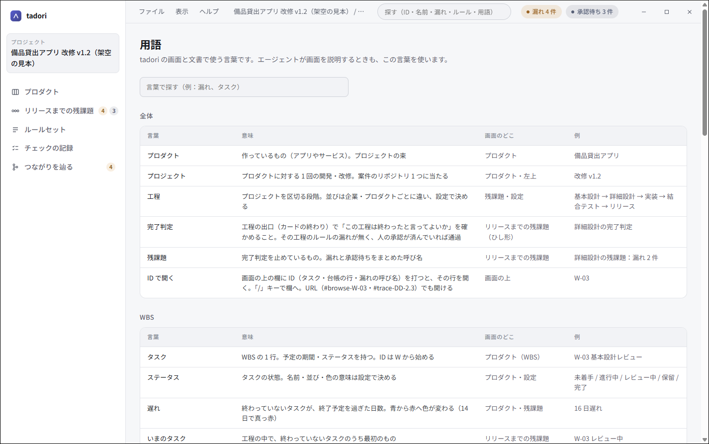

1. エージェントをつなぐ
Claude Code なら、次の 1 行で案件のフォルダを指して tadori の MCP をつなげます。
claude mcp add tadori -- node <tadori>/packages/cli/dist/main.js mcp <案件のフォルダ>つないだエージェントは、まず how_to の start（はじめ方）と agent-rules（守ること）を読みます。守ることには「承認しない」「漏れを埋めたと判定しない」「割合や点数を作らない」が書いてあります。
2. 残課題と漏れを読む
get_remaining は工程ごとの漏れと承認待ち、list_leaks は漏れごとの担当と直し方を返します。画面と同じ判定の核を通すので、画面と結果が食い違いません。
- R4·DD-2.3 DD-2.3「貸出上限の判定」の改修後の対応が空
担当：設計担当 直し方：ledger/items.tsv の DD-2.3 の行（6 行目）の「改修後の対応」列に書く3. 画面を指して説明する
screen に「指す・押す・打つ・移る・話す」を渡すと、人が開いている tadori の画面で、エージェントの専用カーソルが動きます。黄色の枠と一言で「ここです」と示してから、ページの中で押します。
{ "action": "go", "hash": "#phases-dd" }
{ "action": "point", "target": "R4·DD-2.3", "message": "この漏れは設計担当が直します" }
人は自分のマウスで、同じ画面を同時に触っていて構いません。押せるのは人が画面で押せるものだけで、判定や保存の近道はありません。フォルダ選びのような OS の画面は操作できないので、そこは人に頼みます。
4. 言葉をそろえる
glossary で、画面で使う言葉（漏れ・完了判定・残課題・タスク・つながりを辿る）の意味と、画面のどこに出るかを引けます。エージェントが人に説明するときは、この言葉を使います。
